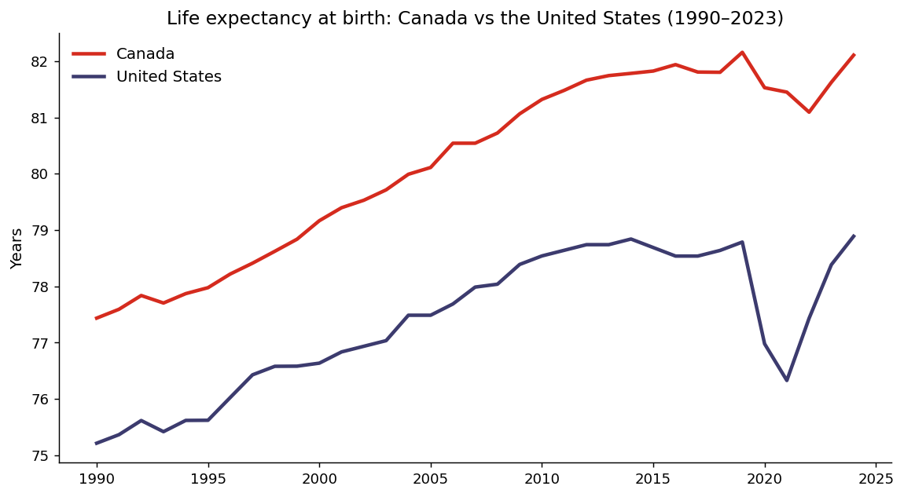
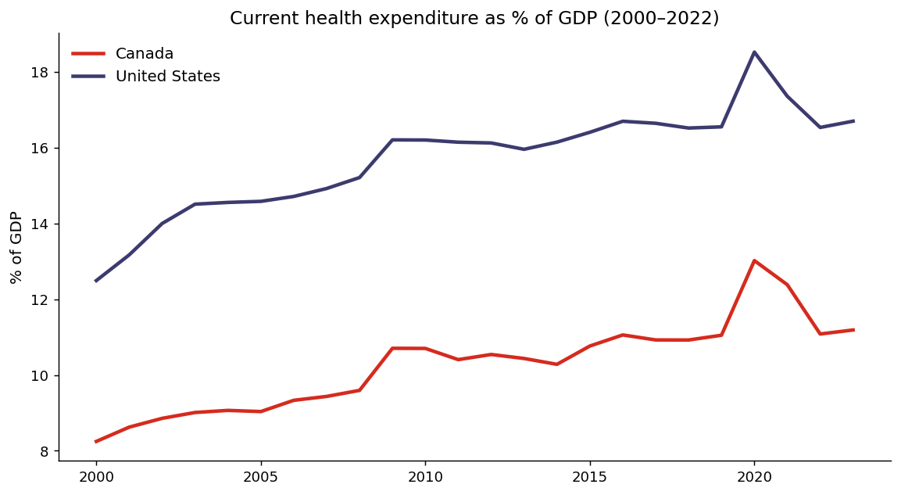
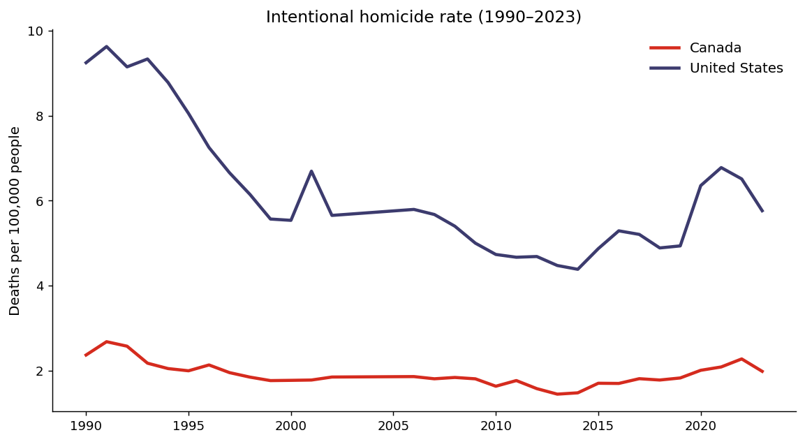
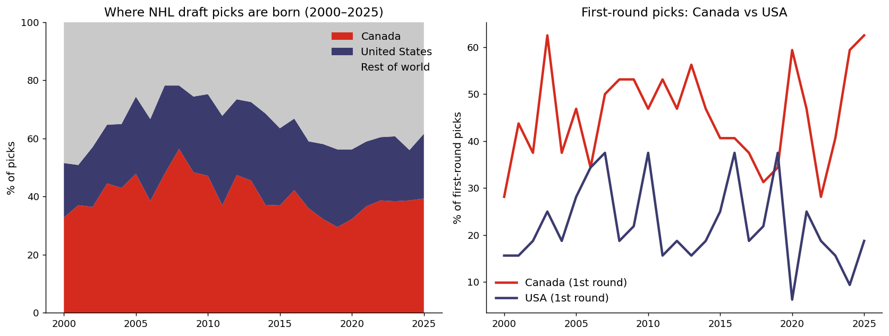
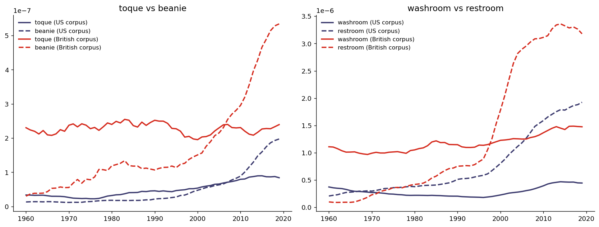
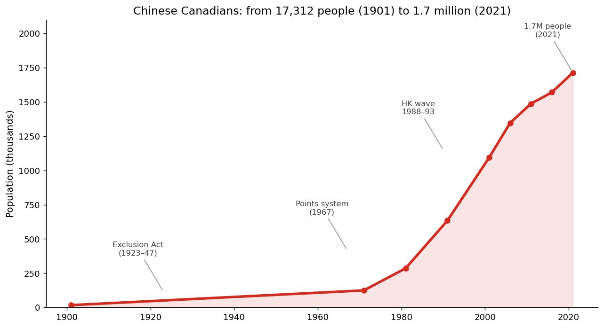
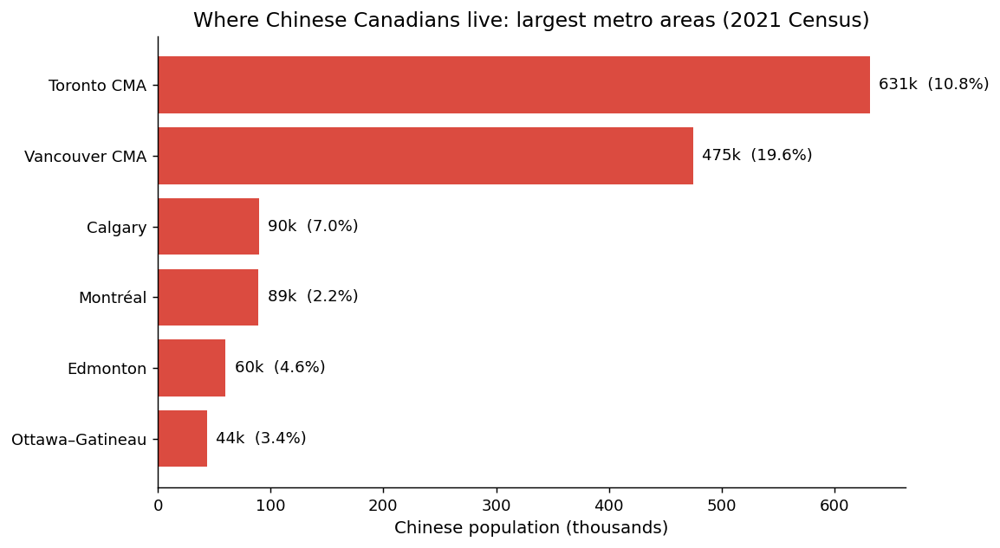
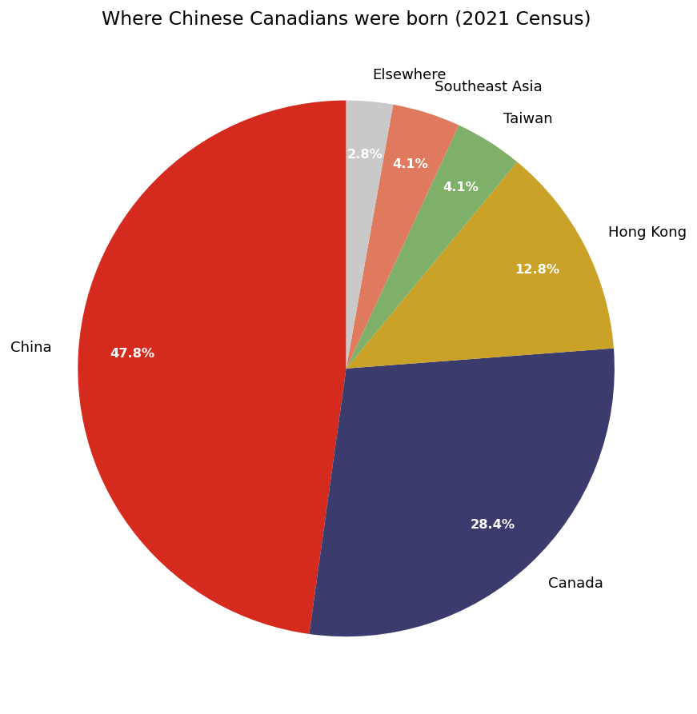

1 The values gap, in numbers
Canada and the US share a language, a border, and a Netflix catalogue. The outcomes data tells a different story — one that has been widening for thirty years.



Two more quiet divergences: Canada's Gini coefficient sits at 31.5 versus 41.8 in the US (less inequality), and 21.3% of people in Canada are immigrants versus 15.4% in the US — Canada is, per capita, the more immigrant country by a wide margin.
2 Who owns hockey? The draft receipts
Hockey is Canada's creation myth and America's growth market. I pulled every NHL draft pick from 2000 to 2025 — 5,997 players — and counted them by birth country.

Canada's share of all picks peaked around 2008 (~56%) and slid to ~29% by 2019 — the US development program's golden era — before rebounding to ~39% in 2025. But at the top of the draft, Canada never really left: Canadians have taken the majority of first-round picks in most years, including #1 overall in 2025 (Matthew Schaefer). The pipeline narrowed; the penthouse stayed Canadian.
One more 2025 detail: Alberta — population 4.8 million — produced 11 draft picks, 4th of any province or state. And Haoxi Wang became one of the first Chinese-born players ever drafted (33rd overall). The game's map keeps expanding.
3 The vocabulary border
Canadians say toque, washroom, eh, and cheque. But do those words show up as "Canadian" in the books each country publishes? I queried the Google Books Ngram corpus (American vs British English, 1960–2019) for the shibboleths.

| Word Canadians say | How much more common in British vs American books (2019) | Canadian verdict |
|---|---|---|
| cheque | 5.9× | 🇬🇧 side — and proud of it |
| eh | 4.5× | 🇬🇧 side (interjection travels with the Commonwealth) |
| washroom | 3.3× | 🇬🇧 side |
| toque | 2.9× | 🇬🇧 side — though beanie wins everywhere in print |
The honest caveat: books are a lagging, formal indicator. Spoken Canadian English keeps all four words alive while print — even British print — is being Americanized (restroom has surged in the British corpus since the 1990s). The border you can hear is stronger than the border you can read.
4 The third story: Chinese Canadians
This is the part of the story I grew up inside. The Chinese Canadian community went from a head tax to a majority — in one city, literally.



A short version of the long history: Chinese workers built the railway that made Confederation real (1881–85), and were rewarded with a $50 head tax (1885, raised to $500 in 1903), a Vancouver pogrom (1907), and a near-total immigration ban (1923–47). In 1931 there were 1,240 Chinese men for every 100 Chinese women in Canada. Then came the 1967 points system — immigration by skills, not by race — and the community grew 100× in two generations. The arc from the Exclusion Act to Richmond, where a Chinese-language ballot is unremarkable, is the fastest demographic turnaround in Canadian history.
And the generational shift keeps going: in 1961, 60% of Chinese Canadians identified as Christian; by 2021, 67% reported no religion. The community my grandparents knew — clan associations and Chinatown benevolent societies — is now majority secular, majority suburban, and plurality Mandarin-speaking. The culture didn't disappear; it moved to Markham and started ordering bubble tea.
5 The Vocabulary Border Test
Eight questions. Pick the word you'd actually say. No studying — your upbringing already graded this.